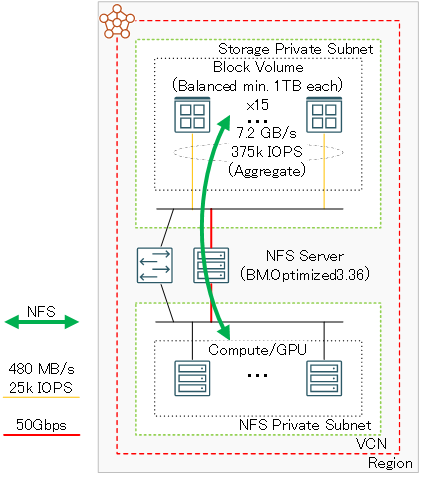

0. 概要
HPC/GPUクラスタと共に利用するファイル共有ストレージは、その構築手法を決定する際に以下の評価項目を考慮する必要があります。
- 計算/GPUノードの複数ノード同時アクセス時性能
- ランニングコスト
- ストレージに格納するデータの可用性
- ファイル共有ストレージサービスの可用性
- システム構築・運用のしやすさ
- 構成可能な最大スループット
本テクニカルTipsは、HPC/GPUクラスタ向けファイル共有ストレージの構築を念頭に、いくつかのファイル共有ストレージ構築手法を紹介し、上記評価基準を元にどの手法を採用すればよいか、その考慮点を解説します。
ファイル共有ストレージを構築する際の最初の考慮点は、ファイルシステムにLustreとNFSのどちらを採用するかです。
Lustreを採用する場合は、マネージドLustreサービスの File Storage with Lustre を使用します。
NFSを採用する場合は、マネージドNFSサービスの ファイル・ストレージ を使用する方法と、 ベア・メタル・インスタンス とストレージサービスで構築する方法（以降”ベア・メタル・インスタンスNFSサーバ”と呼称）の、どちらを採用するかです。
File Storage with Lustre を採用する場合は、性能要件に合わせて用意されている4タイプの パフォーマンス層（※1）からどれを採用するかを考慮します。
※1）パフォーマンス層 は、125 MB/s/TB / 250 MB/s/TB / 500 MB/s/TB / 1,000 MB/s/TBが存在しますが、本テクニカルTipsでは125 MB/s/TBを前提に解説します。 パフォーマンス層 に関連する OCI 公式ドキュメントは、 ここ を参照してください。
ファイル・ストレージ を採用する場合は、性能要件に合わせて マウント・ターゲット に標準タイプ（以降”標準FSS”と呼称）とHigh Performanceタイプ（以降”高性能FSS”と呼称）（※2）のどちらを採用するかを考慮します。
※2）High Performanceタイプの マウント・ターゲット は、その性能違いで3種類存在しますが、本テクニカルTipsでは読み取りスループット設定が80 Gbpsで性能が最も高い HPMT-80 を前提に解説します。High Performanceタイプの マウント・ターゲット 詳細は、 ここ を参照して下さい。
ベア・メタル・インスタンスNFSサーバを採用する場合は、以下2種類のどちらにするかを考慮します。
- ブロック・ボリュームNFSサーバ
ストレージに ブロック・ボリューム を使用し、これをベア・メタル・インスタンスにアタッチする方法です。 - DenceIO NFSサーバ
ベア・メタル・インスタンス にNVMe SSDドライブを搭載するDenceIOシェイプを使用する方法です。
以上より、本テクニカルTipsで解説するファイル共有ストレージは、以下5種類です。
| 構築手法 | 使用するサービス | ファイルサーバ | ストレージ | 保存対象 データ （※3） |
ターゲット スループット レンジ |
|---|---|---|---|---|---|
| 標準FSS (NFS) |
ファイル・ストレージ | 標準 マウント・ターゲット |
ファイル・システム | 長期保存 データ |
120 MiB/s （※4） |
| 高性能FSS (NFS) |
ファイル・ストレージ | High Performance マウント・ターゲット |
ファイル・システム | 長期保存 データ |
10 GiB/s （※4） |
| ブロック・ボリューム NFSサーバ (NFS) |
ベア・メタル・インスタンス + ブロック・ボリューム |
BM.Optimized3.36 | ブロック・ボリューム | 中期保存 データ |
5 GiB/s （※5） |
| DenceIO NFSサーバ (NFS) |
DenceIOタイプ ベア・メタル・インスタンス |
BM.DenseIO.E5.128 | NVMe SSD ローカルディスク |
短期保存 データ |
10 GiB/s （※5） |
| File Storage with Lustre (Lustre) |
File Storage with Lustre |
- | - | 長期保存 データ |
3.9 - 25 GB/s （※6） |
※3）対象の構築手法が提供するデータ可用性レベルに応じて分類しています。（データ可用性が低いほど短期保存データ用ファイル共有ストレージに分類）
※4）マウント・ターゲット の最大スループット値を元に記載しています。
※5）IOR の測定値を元に記載しています。
※6）使用する パフォーマンス層 （MB/s/TB）と 容量 （TB）を掛け合わせて計算した値です。
以降では、これら5種類のファイル共有ストレージ構築手法について、まず初めに2種類の ベア・メタル・インスタンス NFSサーバ（ブロック・ボリュームNFSサーバとDenceIO NFSサーバ）の構成を解説し、次に前述の評価項目をもとに5種類の構築手法を比較します。
なお各構築手法を使用したファイル共有ストレージは、 OCI HPCチュートリアル集 の 1-3. ファイル共有ストレージ カテゴリの以下チュートリアルを参照して構築することが出来ます。
| 構築手法 | チュートリアル |
|---|---|
| 標準FSS | ファイル・ストレージでファイル共有ストレージを構築する |
| 高性能FSS | ファイル・ストレージでファイル共有ストレージを構築する |
| ブロック・ボリュームNFSサーバ | ブロック・ボリュームでファイル共有ストレージを構築する |
| DenceIO NFSサーバ | 短期保存データ用高速ファイル共有ストレージを構築する |
| File Storage with Lustre | File Storage with Lustreでファイル共有ストレージを構築する |
1. ベア・メタル・インスタンスNFSサーバ構成
1-0. 概要
本章は、本テクニカルTipsが前提とする2種類のベア・メタル・インスタンスNFSサーバ（ブロック・ボリュームNFSサーバとDenceIO NFSサーバ）の構成を解説します。
1-1. ブロック・ボリュームNFSサーバ構成
NFSサーバのインスタンスは、 BM.Optimized3.36 を使用します。
この理由は、このシェイプが50 GbpsのTCP/IP接続用ポートを2個搭載し、それぞれをiSCSI接続の ブロック・ボリューム アクセス用途とNFSクライアントへのNFSサービス用途に割当ててこれらを同時に使用することで、NFSサービスに50 Gbpsの帯域をフルに使用することが可能となるためです。
またストレージに使用する ブロック・ボリューム は、 パフォーマンス・レベル を バランス で作成します。
パフォーマンス・レベル が バランス の ブロック・ボリューム は、ボリューム・サイズの増加とともにその性能が向上し1 TBで上限に達するため、1 TB以上のボリュームを基本単位として複数ボリュームをLinuxの論理ボリューム機能で各ボリュームにストライピングを掛けつつ1ファイルシステムに構成し、コストパフォーマンスを最大化します。
この際、NFSファイルシステム性能としては15ボリューム程度で性能が頭打ちとなることを考慮し、ボリューム15個をストライプ数15でファイルシステムを作成します。

総容量が15 TBより大きなストレージが必要な場合は、単一 ブロック・ボリューム サイズを1 TBより大きくすることで、性能を維持したままその総容量を増やすことが可能です。
例えば100 TBの総容量が必要な場合は、ボリューム・サイズを7 TBとすることで、7 TB x 15 = 105 TBの総容量を実現することが出来ます。
1-2. DenceIO NFSサーバ構成
NFSサーバのインスタンスは、 BM.DenseIO.E5.128 を使用します。
この理由は、このシェイプが100 GbpsのTCP/IP接続用ポートを1個と12台の6.8 TB NVMe SSDローカルディスクを搭載するため、このローカルディスクをストレージに使用することで、100 Gbpsのネットワーク帯域全てをNFSのサービスに使用することが可能となるためです。
これにより、 1-1. ブロック・ボリュームNFSサーバ構成 で解説するブロック・ボリュームNFSサーバに対して、NFSのサービスに使用できるネットワーク帯域が2倍となり、NVMe SSDローカルディスクの持つ高いI/O性能とあいまって、計算/GPUノードからの多数同時アクセス時に高いスループットとメタデータ性能を提供するファイル共有ストレージを構築することが可能になります。

また、ストレージに使用する12台のNVMe SSDローカルディスクは、データ保全性とパフォーマンスを両立するため、 Linux software RAID によるRAID10構成とします。

2. 各構築手法の比較
2.0 概要
本章は、5種類の構築手法を 0. 概要 に記載の6個の評価項目を以下4グループに分類して比較します。
- コストパフォーマンス
１．計算/GPUノードの複数ノード同時アクセス時性能
２．ランニングコスト - 可用性
３．ストレージに格納するデータの可用性
４．ファイル共有ストレージサービスの可用性 - 運用性
５．システム構築・運用のしやすさ - 最大性能
６. 構成可能な最大スループット
詳細は以降の章で解説しますが、コストパフォーマンスはベア・メタル・インスタンスNFSサーバを使用する構築手法が有利で、可用性と運用性は ファイル・ストレージ を使用する構築手法が有利となります。
2-1. コストパフォーマンスによる比較
本章は、コストパフォーマンスとして以下2項目の評価指標を採用します。
- 計算/GPUノードの複数ノード同時アクセス時性能
- ランニングコスト
ここで 評価指標 1. は、 IO500 でも採用されているファイルシステムベンチマークツールである IOR と mdtest を、それぞれスループットとメタデータ性能の評価指標として採用します。
以下の表は、4種類の構築手法を価格と性能の観点で比較しています。
| 構築手法 | 構成 | 月額定価 （2025年4月時点） |
IOR | mdtest |
|---|---|---|---|---|
| 標準FSS | マウント・ターゲット (Standard) ファイルシステム (15 TB) Total |
0 円 697,500 円 697,500 円 |
125 MiB/s （※7） |
- （※8） |
| 高性能FSS | マウント・ターゲット (HPMT-80) ファイルシステム (80 TB) Total |
3,720,000 円 0 円 3,720,000 円 |
10 GiB/s （※7） |
- （※8） |
| ブロック・ボリューム NFSサーバ |
ブロック・ボリューム (Balanced 15 TB) BM.Optimized3.36 Total |
98,813 円 312,748 円 411,561 円 |
5,266 MiB/s (Write) 5,707 MiB/s (Read) （※9） |
12,456 (create) 126,916 (stat) 13,231 (delete) （※9） |
| DenceIO NFSサーバ |
BM.DenseIO.E5.128 (6.8 TB NVMe SSD x 12) |
1,372,991 円 | 8,967 MiB/s (Write) 7,526 MiB/s (Read) （※10） |
83,406 (create) 255,682 (stat) 70,499 (delete) （※10） |
| File Storage with Lustre |
パフォーマンス層（125 MB/s/TB） 容量（80 TB） |
1,841,400 円 | 10 GB/s （※11） |
- （※8） |
※7）IOR 測定値が無いため、 マウント・ターゲット の最大スループット値を記載しています。
※8）mdtest 測定値が無いため、記載していません。
※9）この測定値は、 OCI HPCチュートリアル集 の ブロック・ボリュームでファイル共有ストレージを構築する に従って構築したブロック・ボリュームNFSサーバに於いて、4ノードの VM.Standard2.24 からノード当たりMPIプロセス数8・総MPIプロセス数32の条件で測定し、3回計測した平均値です。
※10）この測定値は、 OCI HPCチュートリアル集 の 短期保存データ用高速ファイル共有ストレージを構築する に従って構築したDenceIO NFSサーバに於いて、8ノードの VM.Standard2.24 からノード当たりMPIプロセス数16・総MPIプロセス数128の条件で測定し、3回計測した平均値です。
※11）IOR 測定値が無いため、使用する パフォーマンス層 （MB/s/TB）と 容量 （TB）を掛け合わせて計算した値です。
この表から、以下のことがわかります。
- IOR スループットレンジが同程度の高性能FSS、DenceIO NFSサーバ、及び File Storage
with Lustre を比較すると、- DenceIO NFSサーバのランニングコストが最も安価（※12）
- （他のサービスの測定値が無い状況の中）DenceIO NFSサーバは圧倒的なメタデータ性能を示す
- File Storage with Lustre のランニングコストは高性能FSSの約半分
- パフォーマンスがエントリーレベルの標準FSSとブロック・ボリュームNFSサーバを比較すると、
- ブロック・ボリュームNFSサーバのランニングコストは標準FSSの6割程度（※13）（※14）
- ブロック・ボリュームNFSサーバのスループットは標準FSSの40倍以上
※12）この比較は、高性能FSSと File Storage with Lustre の容量が80 TBに対してDenceIO NFSサーバが40.8 TBと、異なる総容量で比較しているため条件が異なります。
※13）総容量15TBのブロック・ボリュームNFSサーバは、その価格の大部分を BM.Optimized3.36 が占めるため、総容量がこれより大きくなると、下表のように標準FSSに対する価格優位性が拡大します。
| 総容量（TB） | 標準FSS 月額定価 （2025年4月時点） |
ブロック・ボリューム NFSサーバ 月額定価 （2025年4月時点） |
|---|---|---|
| 15 | 697,500 円 | 411,561 円 |
| 100 | 4,650,000 円 | 971,498 円 |
| 500 | 23,250,000 円 | 3,606,498 円 |
| 1,000 | 46,500,000 円 | 6,900,248 円 |
※14）標準FSSは、従量制課金のため使用量が15 TBを下回るとそれに応じて金額が安くなりますが、 ブロック・ボリューム NFSサーバはその時点の使用量に関わらず定額課金されます。
以上より、性能レンジが高性能・エントリーレベル何れの場合も、コストパフォーマンスを評価指標に各構築手法を比較すると、ベア・メタル・インスタンスNFSサーバを使用する構築手法がファイル・ストレージを使用する構築手法より圧倒的にコストパフォーマンスが良いことがわかります。
2-2 可用性による比較
本章は、可用性として以下2項目の評価指標を採用します。
- ストレージに格納するデータの可用性
- ファイル共有ストレージサービスの可用性
ここで ファイル・ストレージ を使用する標準FSSと高性能FSSは、可用性を評価指標とした場合同じ評価となるため、これらをまとめて4種類の構築手法を比較します。
以下の表は、これら4種類の構築手法の可用性観点での利点・欠点を比較しています。
| 構築手法 | 利点 | 欠点 |
|---|---|---|
| 標準FSS 高性能FSS |
・HA化された マウント・ターゲット による高い サービス可能性 ・ファイル・システム が 可用性ドメイン 内に複数 レプリカを持つことによる高いデータ可用性 ・ ファイル・ストレージ が用意する豊富なバック アップ機能を使用することによる高いデータ可用性 （※15） |
- |
| ブロック・ボリューム NFSサーバ |
・ブロック・ボリューム が 可用性ドメイン 内に 複数レプリカを持つことによる高いデータ可用性 （※16） |
・NFSサーバがサービス可用性に対する 単一障害点 ・データ可用性を高めるために独自の バックアップ環境構築が必要（※17）（※18） |
| DenceIO NFSサーバ |
・ Linux software RAID のRAID10によるデータ 可用性 |
・NFSサーバがサービス可用性に対する 単一障害点 ・NFSサーバがデータ可用性に対する 単一障害点（※19） ・NVMe SSDドライブのRAID10による脆弱なデータ 可用性 ・データ可用性を高めるために独自の バックアップ環境構築が必要（※17） |
| File Storage with Lustre |
・HA化されたファイルサーバー群による高い サービス可能性 ・格納するファイルが 可用性ドメイン 内に複数 レプリカを持つことによる高いデータ可用性 |
・データ可用性を高めるために独自の バックアップ環境構築が必要（※20） |
※15）スナップショット、クローン、及びレプリケーションが用意されています。これらサービスの詳細は、OCI公式ドキュメントの ここ を参照ください。
※16）複数の ブロック・ボリューム をNFSサーバにアタッチして使用するため、NFSサーバ障害でインスタンスを入れ替える必要が生じた場合、 ブロック・ボリューム に格納するファイルを復旧するためには特別な手順が必要です。
この詳細は、 OCI HPCテクニカルTips集 の ブロック・ボリュームを使用するNFSサーバのインスタンス障害からの復旧方法 を参照してください。
※17）このバックアップ環境は、 OCI HPCチュートリアル集 の ベア・メタル・インスタンスNFSサーバ向けバックアップサーバを構築する に従って構築することが出来ます。
※18）ブロック・ボリューム に格納するファイルのバックアップは、NFSサーバ上のファイルシステムとしてアクセスしバックアップする必要があり、 ブロック・ボリューム が用意するブロックデバイスレベルのバックアップ機能を利用することが出来ません。
※19）障害等でNFSサーバインスタンスを再構築する必要が発生すると、NVMe SSDローカルディスクに格納するファイルが消失します。
※20）オブジェクト・ストレージ へのバックアップ機能が今後リリースされる予定です。（2025年4月現在）
以上より、可用性を評価指標に各構築手法を比較すると、マネージドサービスであるファイル・ストレージとFile Storage with Lustreを使用する構築手法がベア・メタル・インスタンスNFSサーバを使用する構築手法より圧倒的にデータ可用性とサービス可用性が高いことがわかります。
2.3 運用性による比較
本章は、運用性としてシステム構築・運用のしやすさを評価指標に採用します。
ここで ファイル・ストレージ を使用する標準FSSと高性能FSSは、運用性を評価指標とした場合同じ評価となるため、これらをまとめて4種類の構築手法を比較します。
以下の表は、これら4種類の構築手法の運用性観点での利点・欠点を比較しています。
| 構築手法 | 利点 | 欠点 |
|---|---|---|
| 標準FSS 高性能FSS |
・サービス開始までの構築手順が簡単 ・ファイルシステムの容量拡張作業が不要 ・メンテナンスフリーの マウント・ターゲット ・マウント・ターゲット のアップグレードによる 動的な性能向上が可能 ・NFSクライアント用ソフトウェアが多くの イメージに標準装備 ・幅広いNFSクライアント用イメージの選択肢 |
- |
| ブロック・ボリューム NFSサーバ |
・ボリューム・パフォーマンスとシェイプの選択 によるNFSサーバ性能のVertical Scalingが可能 ・NFSクライアント用ソフトウェアが多くの イメージに標準装備 ・幅広いNFSクライアント用イメージの選択肢 |
・サービス開始までの構築手順が煩雑（※21） ・ファイルシステムの容量拡張作業が煩雑 ・NFSサーバのソフトウェアメンテナンスが必要 |
| DenceIO NFSサーバ |
・NFSクライアント用ソフトウェアが多くの イメージに標準装備 ・幅広いNFSクライアント用イメージの選択肢 |
・サービス開始までの構築手順が煩雑 ・ファイルシステムの容量拡張が不可能 ・NFSサーバのソフトウェアメンテナンスが必要 |
| File Storage with Lustre |
・サービス開始までの構築手順が簡単 ・ファイルシステムの容量拡張作業が簡単 ・メンテナンスフリーのファイルサーバ群 ・ パフォーマンス層のアップグレードによる 動的な性能向上が可能 |
・Lustreクライアントにソフトウェアを インストールする必要有 ・Lustreクライアントのイメージに制約有（※22） |
※21）この構築作業を自動化する スタック が GitHub から無料で提供されています。この詳細は、 OCI HPCチュートリアル集 の ブロック・ボリュームでファイル共有ストレージを構築する を参照してください。
※22）サポートされるLustreクライアントのイメージに関連する OCI 公式ドキュメントは、 ここ を参照してください。
以上より、運用性を評価指標に各構築手法を比較すると、マネージドサービスであるファイル・ストレージとFile Storage with Lustreを使用する構築手法がベア・メタル・インスタンスNFSサーバを使用する構築手法より圧倒的にシステム構築やシステム運用が容易であることがわかります。
またマネージドサービス同士を比較すると、クライアントに手間がかからずOSの制約がないファイル・ストレージがFile Storage with Lustreに対して有利であることがわかります。
2.4 最大性能による比較
本章は、最大性能として各構築手法で構成することが可能な範囲に於ける最大スループットを評価指標に採用します。
この評価指標は、近年大規模化の一途を辿っている機械学習ワークロードを実行するGPUクラスタに於いて、特に計算途中のデータのチェックポイントを取得するケースで、バースト的なスループットがファイル共有ストレージに求められる際に有効です。
以下の表は、各構築手法の構成可能な最大スループットレンジを比較しています。
| 構築手法 | 最大スループットレンジ |
|---|---|
| 標準FSS | 125 MB/s |
| 高性能FSS | 10 GB/s |
| ブロック・ボリュームNFSサーバ | 5 GB/s |
| DenceIO NFSサーバ | 10 GB/s |
| File Storage with Lustre | 25 GB/s （※23） |
※23）テナンシ 当たり・ 可用性ドメイン 当たりの サービス制限 で決定されています。この サービス制限 に関連する OCI 公式ドキュメントは、 ここ を参照してください。
以上より、最大性能を評価指標に各構築手法を比較すると、File Storage with Lustreを使用する構築手法が他を圧倒していることがわかります。